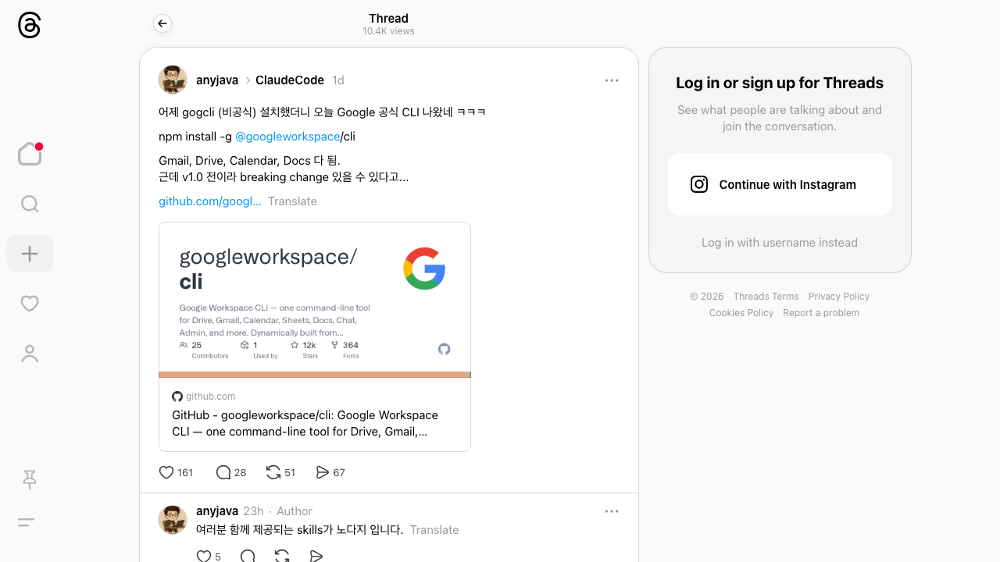

Google Workspace 공식 CLI 출시 — Gmail·Drive·Calendar·Docs 터미널에서
Public GitHub Pages export · full wiki body rendered · raw files excluded
Google Workspace 공식 CLI 출시 — Gmail·Drive·Calendar·Docs 터미널에서
Source candidate from News-Links/2026-03-06 Google Workspace 공식 CLI 출시/README.md
Source Content
Google Workspace 공식 CLI 출시 — Gmail·Drive·Calendar·Docs 터미널에서
🧵 원본: https://www.threads.com/@anyjava/post/DVe3ypeAc7O
⚠️ 아카이브 미생성 (Wayback Machine 저장 실패)
작성자: @anyjava (10.4K views, ❤️161, 💬28)
📋 요약
Google이 공식 Workspace CLI를 출시. npm install -g @googleworkspace/cli 한 줄로 Gmail, Drive, Calendar, Docs, Sheets, Chat, Admin 등을 터미널에서 직접 제어 가능. 단, v1.0 이전이라 breaking change 가능성 있음.
💬 포스트 내용
어제 gogcli(비공식) 설치했더니 오늘 Google 공식 CLI 나왔네 ㅋㅋㅋ
npm install -g @googleworkspace/cliGmail, Drive, Calendar, Docs 다 됨.
근데 v1.0 전이라 breaking change 있을 수 있다고...
💬 작성자 댓글: "여러분 함께 제공되는 skills가 노다지 입니다."
🖼️ 스크린샷

💡 키포인트
- 공식 출시: Google이 직접 만든 Workspace CLI (
@googleworkspace/cli) - 설치:
npm install -g @googleworkspace/cli - 지원 서비스: Gmail, Drive, Calendar, Docs, Sheets, Chat, Admin 등
- 주의: v1.0 이전 → breaking change 있을 수 있음
- GitHub: ⭐12k stars, 364 forks — 이미 높은 관심도
- 활용: OpenClaw의
gog스킬 대체/보완 도구로 활용 가능
🔗 관련 링크
- GitHub: https://github.com/googleworkspace/cli
- npm: https://www.npmjs.com/package/@googleworkspace/cli
Source Trace
News-Links/2026-03-06 Google Workspace 공식 CLI 출시/README.md